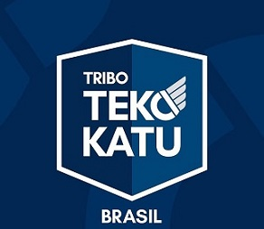
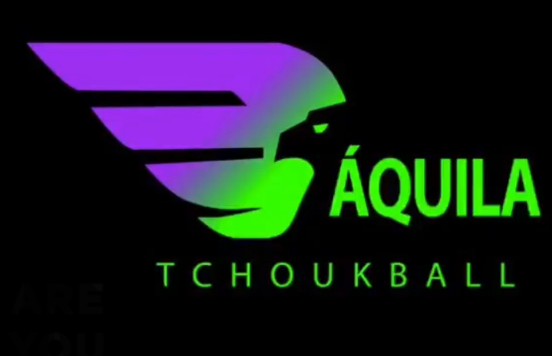
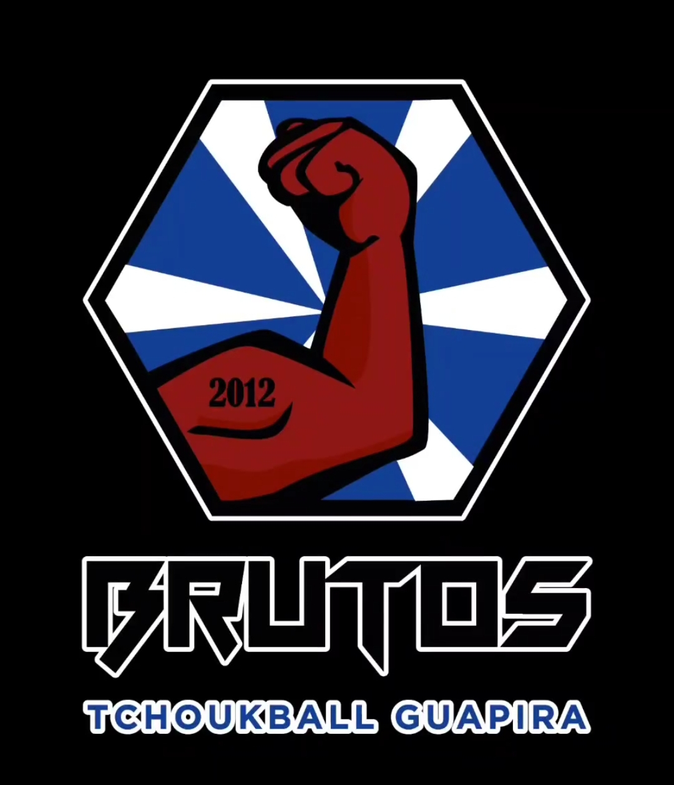

|

|
O time Tekokatu de São Paulo é um clube que leva o técnico da seleção brasileira de tchoukball que iremos falar em outra tag sobre. |
|  | Aquila é um time que até mes passado era só feminino e leva nas costas 2 titulos brasileiros recentemente abriu as portas para o aquila boys seu time masculino. |
|  | Bruts é um time da grande sao pauo que teve uma participaçao no ultimo brasileiro de tchoukball também conta com um belo time de tchoukball juvenil. |